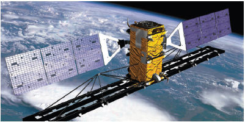
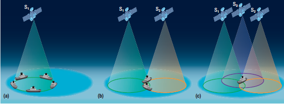
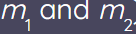
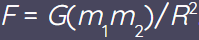

Orbits
RADARSAT-1 and RADARSAT-2 are Earth-observation satellites designed and commissioned by the Canadian Space Agency. These “eyes in the skies” peer down from orbit, capturing images and data that help scientists monitor environmental changes and the planet’s natural resources. Examples of satellite monitoring include detecting oil spills, tracking ice movements, identifying ships at sea, and monitoring natural disasters.

GPS satellites can determine the location of an object, in this case a boat.
(a) The data from one satellite will show that the location is somewhere along the circumference of a circle.
(b) Two satellites consulted simultaneously will refine the location to one of two intersection spots.
(c) With three satellites consulted simultaneously, the intersection of three circles will give the location of the boat to within 15 m of its actual position.

Select each tab to learn more.
Microgravity is the condition in which people or objects appear to be weightless. The effects of microgravity can be seen when astronauts and objects float in space. Microgravity can be experienced in other ways, as well.
Any particle of matter in the universe attracts any other with a force varying directly as the product of the masses and inversely as the square of the distance between them. In symbols, the magnitude of the attractive force F is equal to G (the gravitational constant, a number the size of which depends on the system of units used and which is a universal constant) multiplied by the product of the masses  and divided by the square of the distance R: 
When Newton developed the idea of universal gravitation, he also theorized that the same force that pulls objects to Earth also keeps the Moon in its orbit. One difference, of course, is that the Moon does not hit Earth’s surface. The Moon orbits Earth at a distance from Earth’s centre—called the orbital radius.

Watch this video